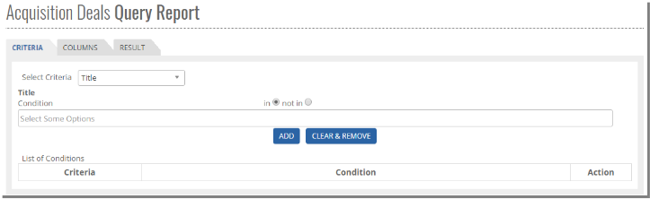

	<section>
		<article>
			<h2>Acquisition Deal<span></span></h2>
			<div>
				<p></p>
				<p><b>Query Report</b></p>
				<p><b>Acquisition Query Report</b></p>

				<p>Query Reports Come under Reports Module. It can be accessed by users who have rights for it.</p>

				<p>User can Login and Click on "<b>Reports</b>" and Click on "<b>Query Reports</b>" </p>

				<p>User will get following page and user can select "<b>Acquisition Deals</b>" Or "<b>Syndication Deals</b>"</p>

				<p>As shown below Select "<b>Acquisition Deals</b>" from drop down and click on "<b>New query</b>" button.</p>

				<p>- Reports will come according to "<b>Business Unit</b>" </p>

				<p>- User has option to click on "<b>Theatrical Territory</b>" And "<b>Expired Deals</b>" if user want to check report including Theatrical Territory and Expired deals then user has to select both or any single option as per user requirement. (Not mandatory)</p>

				<div class="triangle-border top">				
					
				</div>

				<p><b>Query Criteria:</b></p>

				 <p>- After clicking on New query button user will get <b>Query Criteria</b> Tab as shown in below image.</p>

				 <p>- Now in following screen select Query Criteria tab then select criteria as per the requirement. </p>

				<p><b>Title:</b> </p>

				<div class="triangle-border top">				
					
				</div>

				<p>- Once user selects the title then below, in Conditions user can select movie for E.g. "Ek tha tiger" and click on ADD button to get it added in the list.</p>

				<p>- Select Either "<b>in</b>" or "<b>not in</b>". If user selects "<b>in</b>", report will be generated with only selected movie. If user select "<b>not in</b>", report will be generated with "<b>All Titles</b>" except "<b>Ek Tha Tiger</b>".</p>


				<p>- If user clicks on <b>ADD</b> button then system includes the conditions (in/not in) and criteria to query Report and get the following result.</p>

				<div class="triangle-border top">				
					
				</div>

				<p>- If user click on "<b>Clear & Remove</b>" Button then it clears whatever titles and condition is displayed.</p>

				<p>- Before selecting title and clicking on "ADD", if user select "<b>Back</b>" button it moves you to the query report list page. </p>

				<p><b>Note:</b> User can follow same process for Query Criteria <b>in Platform, Acquire licensor, Country, Director, Star Cast, Milestone, Subtitling, Dubbing</b>.</p>

				<p>If user selects criteria as "<b>Agreement No</b>" then user will get following page as shown below:</p>

				<div class="triangle-border top">				
					
				</div>

				<p>- If user selects "<b>Equal</b>" Radio button and enter the Agreement Number in the text box, result will be displayed with the details of the given Agreement No.</p>

				<p>- If user selects "<b>Start with</b>" Radio button and enter the Agreement Number in the text box, result will be displayed with those deals whose agreement number starts with given no.</p>

				<p>- If user selects "<b>Contains</b>" Radio button and gives any string here, result will be displayed with those details whose deals no contains whatever string user has given.</p>

				<p>- If user clicks on "<b>ADD</b>" button then the system includes the conditions <b>(Equal/Start With/Contains)</b> and Criteria <b>(Deal Number)</b> to query and gets the following screen: </p>

				<div class="triangle-border top">				
					
				</div>

				<p>- If User clicks on "<b>Clear & Remove</b>" button it clears whatever deals no and conditions user had selected and displays the blank query criteria tab</p>

				<p>- Before selecting the agreement Number and clicking Add button if user select "<b>Back</b>" Button then its moves to query Link.</p>

				<p><b>Note:</b> User can follow same process in the <b>Deal Description and Original Title</b>.</p>

				<p><b>Status:</b> If User select Criteria As "<b>Status</b>" then user will get following page as shown below:</p>

				<div class="triangle-border top">				
					
				</div>

				<p>- If user select "<b>Equal</b>" radio button, and select "<b>Fully Executed</b>" from the drop down then then the result will display all the fully executed deals.</p>
				  
				<p>- If user select "<b>Not equal</b>" radio button and select "<b>Fully executed</b>" from the drop down then the result will display all deal except fully executed deals. </p>

				<p>- If user click on "<b>ADD</b>" button then the system includes the conditions <b>(Equal/Not Equal)</b> and criteria (<b>Status</b>) to query and get following image:</p>    

				<div class="triangle-border top">				
					
				</div>


				<p>- If User click on "<b>Clear & Remove</b>" button it clears whatever deals no and conditions user had selected and displays blank query criteria tab.</p>

				<p>- Before selecting the Agreement Number and clicking Add button if user select "<b>Back</b>" Button then its moves to query Link.</p>

				<p><b>Note:</b> User can follow the same process in "<b>Holdback</b>".</p>

				<p>- If user select Criteria as "<b>Right Start Date</b>" user will get following page as shown below:</p>

				<div class="triangle-border top">				
					
				</div>

				<p>- If User select "<b>Equal</b>" radio button then the result will display all the deals whose right start date is equal to date selected.</p>

				<p>- If user select "<b>Greater Than</b>" radio button then the result will display all deals whose right start date is greater than the date selected.</p>

				<p>- If user select "<b>Less Than</b>" radio button then the result will display all deals whose right start date is less than the date selected.</p>

				<p>- If user select "<b>Between</b>" radio button then it comes with calender icon where the user have selected the dates and result display with all details whose rights start date in between the dates selected. </p>
				 
				<p>If user click on "<b>ADD</b>" button then the system includes the conditions <b>(Equal/Greater Than/ Less Than/ between)</b> and Criteria <b>(Right Start Date)</b> to query.</p>

				<p>- If User click on "<b>Clear & Remove</b>" button it clears whatever deals no and conditions user had selected and displays  the blank query criteria tab. </p>

				<p>- Before selecting the agreement Number and clicking Add button if user select "<b>Back</b>" Button then its moves to query List page.</p>

				<p>Note: User can follow the same process with <b>the Right End Date, Year of Release</b></p>

				<p><b>Currency:</b></p>

				<p>- If the user Select Criteria as "<b>Currency</b>", then the following page will be displayed. Select Currency, which comes up with all the active currency from the master.</p>
				 
				<div class="triangle-border top">				
					
				</div>


				<p>- If user select "<b>Equal</b>" radio button, then the result will display all the deals whose currency is equal to the currency selected here.</p>

				<p>- If user select "<b>Not Equal</b>" radio button then the result will display all the deals whose currency is not equal to the currency selected here.</p>

				<p>- If user clicks on "<b>ADD</b>" button then the system will include the conditions <b>(Equal/Not Equal)</b> and criteria <b>(Currency)</b> to query and get following image.</p>

				<div class="triangle-border top">				
					
				</div>

				<p>- If User click on "<b>Clear & Remove</b>" button it clears whatever deals no and conditions user has selected and displays  the blank query criteria tab.</p>
				 
				<p>- Before selecting the agreement Number and clicking Add button if user select "<b>Back</b>" Button then its moves to query list page.</p>

				<p><b>Note:</b> User can follow the same process with <b>Entity</b>.</p>

				<p><b>Original/Dubbed:</b></p>

				<p>If user select Criteria as "<b>Original/ Dubbed</b>" then the following page will get as shown below: </p>

				<div class="triangle-border top">				
					
				</div>

				<p>- If user select on "<b>Original</b>" Radio button, then the result will display only original title movies.</p>

				<p>- If user select "<b>Dubbed</b>" Radio button then the result will display only dubbed title movies.</p>
				 
				<p>- If User clicks on "<b>Clear & Remove</b>" button it clears whatever deals no and conditions user had selected and displays the blank query criteria tab.</p>

				<p>- Before selecting the agreement Number and clicking Add button if user selects "<b>Back</b>" Button then its moves to query list page.</p>

				<p><b>Query Column Tab:</b></p>

				<p>Once the user is done with selecting the Query Criteria, then user has to move to the Query Column tab. Selecting "Query Column" tab get the following page as shown below.</p>

				<div class="triangle-border top">				
					
				</div>

				<p>User can select the list items either by mouse directly or user can select list box and type the list item which user want (whatever user types will be displayed on the top of list box), so the list item will be selected as per typed.</p>

				<p>This is the section whatever the columns the user wants to display in the result. So he can select single column by clicking on '<b>></b>' or '<b>>></b>' to select all the columns. He can deselect the single column by clicking on '<b>&lt;</b>' or '<b>&lt;&lt;</b>' to deselect all the columns.</p>

				<p>If you click on "<b>Back</b>" button it moves to 'Query Report' link page.</p>

				<p><b>Query Result:</b></p>

				<p>Once the user is done with selecting all the columns which user wants to display in the result, select "Query Result" tab and the Result will be generated as shown in the below image:</p>

				<div class="triangle-border top">				
					
				</div>

				<p>The result displays the following columns:- Platform, Acquire Licensor, Right Start Date, Right End Date, Country, Currency, Director, Star-Cast, Deal status, Deal Number, Deal Description, Deal Status, Title, Territory, Holdback, Subtitling, Dubbing , Milestone, year of Release, Entity, Agreement Number.</p>

				<p>The user can "<b>Save</b>" the Results by naming the "<b>Query</b>" with an unique name. </p>

				<p>Give the unique name to Query and click on "<b>Save Query</b>" button, it saves the query.</p>

				<p>User can generate the report in excel by clicking on Export Button and clicking on Excel in the drop-down.</p>

				<p><b>Visibility:</b> It defines who all users can access or check the reports.</p>
				 
				<p>- <b>Public:</b> All users irrespective of any security groups, but within same Business Unit can access the reports.</p>
				<p>- <b>Role based:</b> Users which belong to same security group can access the report.</p>
				<p>- <b>Private:</b> User is accessing/creating report for self. No other user can able to see or share the report .This report will be confidential to the user.  </p>

				<p><b>Query List Page:</b></p>

				<p>Once the user the come back to Query List page, we can see an Option as <b>"Theatrical Territory" and "Expired Deals"</b></p>

				<div class="triangle-border top">				
					
				</div>


				<p>- If user select <b>"Theatrical Territory"</b> then Only Theatrical Territory will be visible in Country, (Theatrical Territory Means only "State/Circuit" which comes under India)</p>

				<p>- If user select <b>"Expired Deals"</b> then only Expired Deal Result will be visible in Query Results.</p>

				<p><b>Steps to Generate Report</b></p>

				<p>- For example, If user wants to generate report for all <b>Linear>Free platforms</b> which are acquired for country <b>Pakistan</b>, below are the steps.</p>

				<p><b>Step 1</b></p>

				<div class="triangle-border top">				
					
				</div>

				<p><b>Step 2</b></p>

				<div class="triangle-border top">				
					
				</div>

				<p><b>Step 3</b> - Click on Result tab. All the deals that falls under selected criteria, will be displayed in Result tab.</p>
				
			</div>
		</article>
	</section>